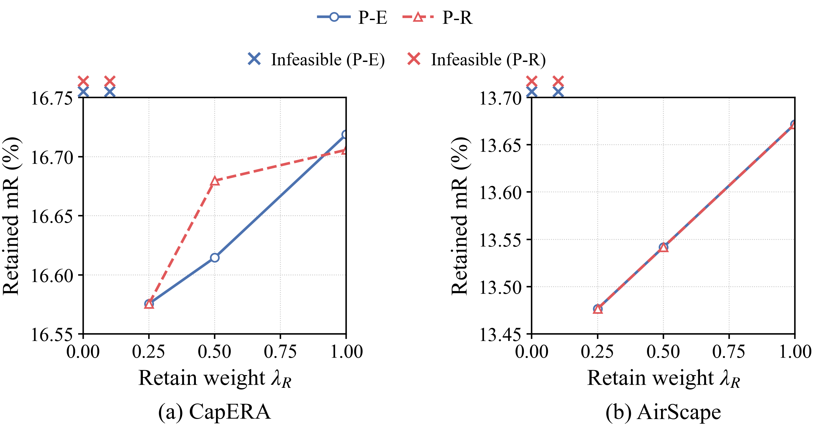
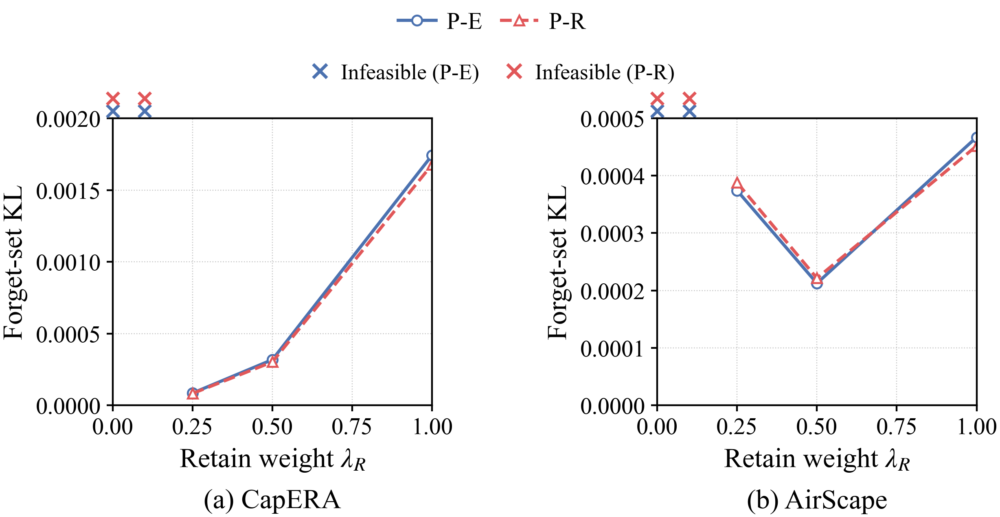

데이터 특성에 따른 FU 가중치
22개 신규 실행과 기존 대조군 전체 CSV · 첫 단계 · 중간 가중치 후속 실험
동일한 proxy 삭제 + 검색 분포 보존(P-R) 목적함수에서, 관측한 검증 KL이 가장 작은 실행 가능 가중치는 CapERA 0.25, AirScape 0.5였다. 이는 기존 검증셋을 확인한 뒤의 탐색적 해석이며, 자동 적응 알고리즘의 검증 결과가 아니다. 전체 결과와 실패를 아래 민감도 차트 및 CSV에 남겼다. 기존 Proposed보다 mR이 내려간 점도 함께 비교해야 한다.
| Dataset | λ_R | mR (%) | Forget KL | Energy (kJ) | Delay (s) |
|---|
| CapERA | 0.25 | 16.5755 | 0.0000819 | 205.412 | 121.773 |
| AirScape | 0.5 | 13.5417 | 0.0002214 | 204.468 | 121.215 |
두 데이터셋에 같은 규칙을 적용하는 향후 후보는, 보존 학습 손실이 요청 시작 teacher보다 허용 범위 이상 커지면 λ_R을 높이고, 보존 여유가 생기면 낮추는 제어다. 무선 제약을 만족하는 가중치 집합 안에서 조정해야 한다. 데이터셋 이름이나 평가용 retrain 결과를 온라인 입력으로 사용하지 않는다.
이 자동 제어기는 아직 설계 단계다. 구체적인 규칙과 검증 조건에 구현 여부를 구분했다. 별도 학습용 calibration 에피소드로 설정을 정하고, 같은 튜닝 예산을 준 대조군 및 새로운 seed·독립 분할에서 검증해야 한다.

PDF · SVG

PDF · SVG
×는 전송 설계를 찾지 못한 가중치이며 성능 y값이 아니다. 선은 실제 완료한 가중치만 연결했다. 전역 재학습 일치, 통계적 우월성 또는 삭제 보증을 주장하지 않는다.
제약 기반 보존 제어 참고: EUPMU (NeurIPS 2025). 향후 무선 실행 가능 집합과의 결합은 이 페이지의 설계 제안이며 원 논문의 보장을 그대로 적용한 것이 아니다.